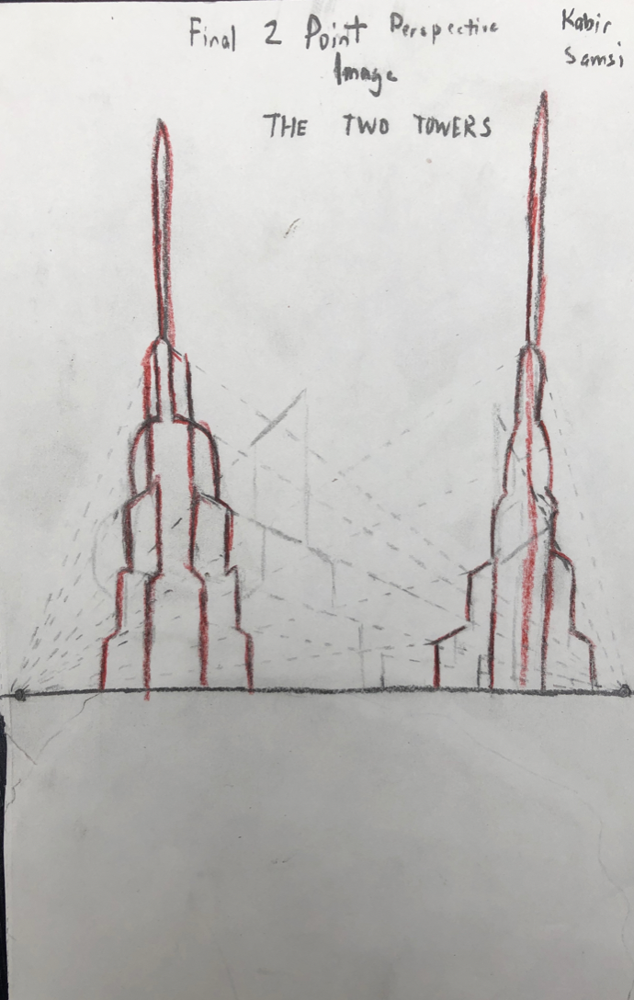
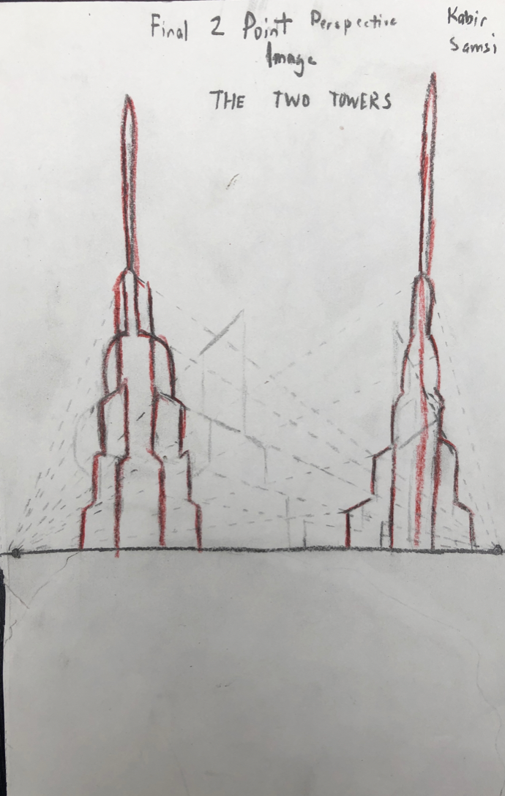

Perspective Sketches
In Cycle 4, we focused a lot on Romantic and Modern Art. We spent time understanding the transition between the religious and perfect world of Renaissance Art to the tragic and realistic world of Baroque art, then to the peaceful upper-class image of the Rococo Era, to the revival of Classical Art in the Neoclassical era. We also studied more modern art from the Impressionistic and Post-Impressionistic Eras. Apart from studying art history, we also studied different drawing perspectives, such as 1-point and 2-point perspective. It was a fascinating class and we ended up going into depth on a lot of different topics.
Click the links to view each project

 
